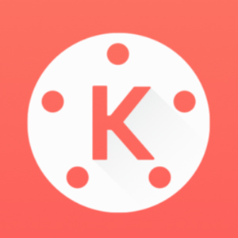

Download aplikasi MOD APK Paling Aman!
Welcome to my android installation. get the latest posts in your inbox. inbox.

KINEMASTER PRO
KineMaster adalah sebuah perangkat lunak ponsel pintar yang khusus digunakan untuk keperluan pengeditan video,Tanpa Watermark,Premium Unlocked,Berbagai macam efek, transisi, dan overlay...
Download→
Adobe Premiere Pro 2018
Adobe Premiere Pro adalah software pengeditan video profesional, salah satu yang terbaik di ranahnya. Kamu bisa menggunakan software ini baik itu untuk pengeditan online atau offline....
Download→
Adobe Premiere Pro 2019
Adobe Premiere Pro adalah software pengeditan video profesional, salah satu yang terbaik di ranahnya. Kamu bisa menggunakan software ini baik itu untuk pengeditan online atau offline....
Download →

CorelDraw X7
CorelDRAW adalah software yang memiliki banyak fungsi untuk membantu kamu mendesain media visual yang dirancang untuk mengedit gambar dua dimensi seperti vektor, ilustrasi dan edit foto....
Download →

Adobe Photoshop CS6
Photoshop, adalah perangkat lunak editor citra buatan Adobe Systems yang dikhususkan untuk pengeditan foto/gambar dan pembuatan efek...
Download →
Adobe Photoshop CS3
Photoshop, adalah perangkat lunak editor citra buatan Adobe Systems yang dikhususkan untuk pengeditan foto/gambar dan pembuatan efek...
Download →